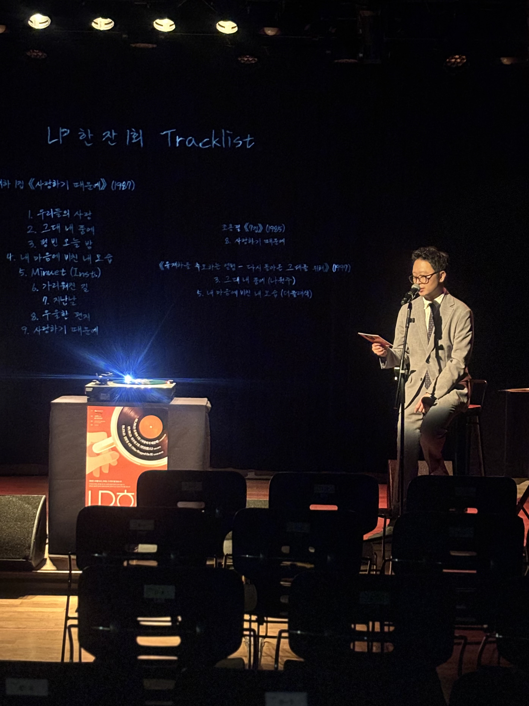

마포음악창작소, 자우림·김현철 명반 LP로 듣는 큐레이션
9·10월 명반 LP 감상 프로그램 ‘한잔’, 전석 1만원

[시사포커스 / 김재록 기자] 마포구(구청장 유동균)는 마포음악창작소(마포대로 238)에서 한국 대중음악 명반을 LP로 감상하고 앨범에 담긴 이야기를 나누는 음악 큐레이션 프로그램 ‘LP 한잔’을 운영한다고 2일 밝혔다. 마포음악창작소는 공연장인 라이브홀, 음악 녹음실(스튜디오), 개인 밴드 작업실, 다목적홀 등을 갖춘 음악 창작 공간으로 현재 마포문화재단이 위탁 운영 중이다. 이곳에서는 인디 뮤지션을 발굴·지원하는 ‘인디스커버리’ 사업과 함께 음원 제작·유통까지 창작 전 과정을 뒷받침한다.
마포구에 따르면, ‘LP 한잔’은 스트리밍으로 한 곡씩 빠르게 소비되는 현대의 음악 감상 방식에서 벗어나 한 장의 앨범을 처음부터 끝까지 온전히 들으며 음악을 깊이 있게 만나자는 취지로 기획됐다. 지난 8월 유재하 1집 「사랑하기 때문에」를 시작으로 총 세 차례 진행되며, 9월 18일에는 자우림 2집 「戀人」, 10월 23일에는 김현철 4집 「Who Stepped On It」이 예정돼 있다. 각 회차는 오전 11시 마포음악창작소 라이브홀(B1)에서 약 80분간 진행된다. 티켓 가격은 전석 1만 원이며, 신청은 마포문화재단 누리집에서 할 수 있고 문의는 예술지원팀(02-3274-8637)으로 하면 된다.
유동균 마포구청장은 “한 장의 LP를 천천히 듣고 이야기를 나누는 시간이 구민들의 일상에 작은 여유가 되길 바란다”며 “마포음악창작소가 뮤지션에게는 창작의 기반이 되고, 구민에게는 좋은 음악을 가까이에서 만나는 문화공간으로 자리 잡도록 힘쓰겠다”고 말했다. 마포음악창작소는 마포구 내 음악 창작 생태계의 거점으로서 인디 뮤지션 성장과 주민 문화 향유를 함께 지원하고 있다.